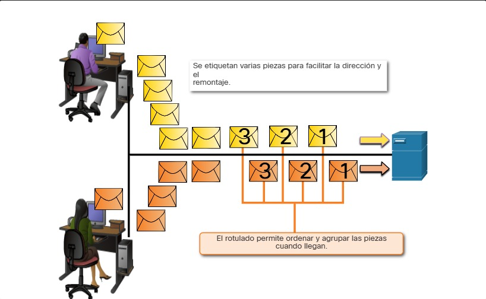

5.3.1 Segmentación del Mensaje
Conocer el modelo de referencia OSI y el modelo de protocolo TCP/IP será útil cuando aprenda acerca de cómo se encapsulan los datos a medida que se mueven a través de una red. No es tan simple como una carta física que se envía a través del sistema de correo.
En teoría, una comunicación simple, como un vídeo musical o un correo electrónico puede enviarse a través de la red desde un origen hacia un destino como una transmisión de bits masiva y continua. Sin embargo, esto crearía problemas para otros dispositivos que necesitan utilizar los mismos canales de comunicación o enlaces. Estas grandes transmisiones de datos originarán retrasos importantes. Además, si falla un enlace en la infraestructura de la red interconectada durante la transmisión, el mensaje completo se perdería y tendría que retransmitirse completamente.
Un método mejor es dividir los datos en partes más pequeñas y manejables para enviarlas por la red. La segmentación es el proceso de dividir un flujo de datos en unidades más pequeñas para transmisiones a través de la red. La segmentación es necesaria porque las redes de datos utilizan el conjunto de protocolos TCP/IP para enviar datos en paquetes IP individuales. Cada paquete se envía por separado, similar al envío de una carta larga como una serie de postales individuales. Los paquetes que contienen segmentos para el mismo destino se pueden enviar a través de diferentes rutas.
La segmentación de mensajes tiene dos beneficios principales.
Aumenta la velocidad - Debido a que un flujo de datos grande se segmenta en paquetes, se pueden enviar grandes cantidades de datos a través de la red sin atar un enlace de comunicaciones. Esto permite que muchas conversaciones diferentes se intercalen en la red llamada multiplexación.
Aumenta la eficiencia - Si un solo segmento no llega a su destino debido a una falla en la red o congestión de la red, solo ese segmento necesita ser retransmitido en lugar de volver a enviar toda la secuencia de datos.
Haga clic en cada botón de la figura 1 y, a continuación, haga clic en el botón Reproducir para ver las animaciones de segmentación y de multiplexión.

5.3.2 Secuenciación
La desventaja de utilizar segmentación y multiplexión para transmitir mensajes a través de la red es el nivel de complejidad que se agrega al proceso. Supongamos que tuviera que enviar una carta de 100 páginas, pero en cada sobre solo cabe una. Por lo tanto, se necesitarían 100 sobres y cada sobre tendría que dirigirse individualmente. Es posible que la carta de 100 páginas en 100 sobres diferentes llegue fuera de pedido. En consecuencia, la información contenida en el sobre tendría que incluir un número de secuencia para garantizar que el receptor pudiera volver a ensamblar las páginas en el orden adecuado.
En las comunicaciones de red, cada segmento del mensaje debe seguir un proceso similar para asegurar que llegue al destino correcto y que puede volverse a ensamblar en el contenido del mensaje original, como se muestra en la figura 2. TCP es responsable de secuenciar los segmentos individuales.

5.3.3 Unidades de datos de protocolo
Mientras los datos de la aplicación bajan a la pila del protocolo y se transmiten por los medios de la red, se agrega diversa información de protocolos en cada nivel. Esto comúnmente se conoce como proceso de encapsulamiento.
Nota: Aunque la UDP PDU es denominada datagrama, los paquetes IP son a veces también conocidos como datagramas IP.
La manera que adopta una porción de datos en cualquier capa se denomina unidad de datos del protocolo (PDU). Durante el encapsulamiento, cada capa encapsula las PDU que recibe de la capa inferior de acuerdo con el protocolo que se utiliza. En cada etapa del proceso, una PDU tiene un nombre distinto para reflejar sus funciones nuevas. Aunque no existe una convención universal de nombres para las PDU, en este curso se denominan de acuerdo con los protocolos de la suite TCP/IP. Las PDU de cada tipo de datos se muestran en la figura.

5.3.4 Tres direcciones
Los protocolos de red exigen el uso de direcciones para la comunicación de red. El cliente usa el direccionamiento para enviar solicitudes y otros datos a un servidor. El servidor utiliza la dirección del cliente para regresar los datos solicitados al cliente que los pidió.
Las capas de OSI de transporte, red y enlace de datos utilizan todas algún tipo de direccionamiento. La capa de transporte utiliza direcciones de protocolo en forma de números de puerto para identificar aplicaciones de red que deben procesar datos de cliente y servidor. La capa de red especifica direcciones que identifican las redes a las que los clientes y servidores están conectados, y los clientes y servidores propiamente dichos. Por último, la capa de enlace de datos especifica los dispositivos de la red LAN local que deben manejar tramas de datos. Las tres direcciones son necesarias para la comunicación entre cliente y servidor, como se ve en la figura.

5.3.5 Ejemplo de encapsulamiento
Usted vio esta animación anteriormente en este módulo. Esta vez, haga clic en Reproducir y concéntrese en el proceso de encapsulación ya que un servidor web envía una página web a un cliente web.
Usted vio esta animación anteriormente en este módulo. Esta vez, haga clic en Reproducir y concéntrese en el proceso de encapsulación ya que un servidor web envía una página web a un cliente web.
La animación muestra una pequeña red con un servidor web y un cliente web. Hay un gráfico que muestra los componentes que forman un mensaje. Una trama de Ethernet y un paquete de IP, un segmento TCP y los datos del usuario. La animación comienza con el servidor web que prepara la página del Lenguaje de marcado de hipertexto (HTML) como datos a enviar. El encabezado HTTP del protocolo de aplicación se agrega al frente de los datos HTML. El encabezado contiene diversos tipos de información, incluida la versión de HTTP que utiliza el servidor y un código de estado que indica que tiene información para el cliente web. El protocolo de capa de aplicación HTTP entrega los datos de la página web con formato HTML a la capa de transporte. El protocolo de la capa de transporte antepone información adicional a los datos HTTP para gestionar el intercambio de información entre el servidor web y el cliente web. La información de IP se antepone a la información de TCP. IP asigna las direcciones IP de origen y de destino que corresponden. Esta información se conoce como paquete IP. El protocolo Ethernet antepone y agrega al final (agrega) información al paquete IP para crear una trama de enlace de datos. A continuación, el marco se convierte en una cadena de bits binarios que se envían a lo largo de la ruta de red al cliente web.
5.3.6 Ejemplo de desencapsulamiento
Este proceso se invierte en el host receptor, y se conoce como desencapsulamiento. El desencapsulamiento es el proceso que utilizan los dispositivos receptores para eliminar uno o más de los encabezados de protocolo. Los datos se desencapsulan mientras suben por la pila hacia la aplicación del usuario final.
Usted vio esta animación anteriormente en este módulo. Esta vez, haga clic en Reproducir y concéntrese en el proceso de desencapsulación.
5.3.7 Práctica de laboratorio - Introducción a Wireshark
Wireshark es un analizador de protocolos de software o una aplicación “husmeador de paquetes” que se utiliza para la solución de problemas de red, análisis, desarrollo de protocolo y software y educación. Wireshark se utiliza en todo el curso para demostrar conceptos de red. En esta práctica de laboratorio, se utilizará Wireshark para capturar y analizar el tráfico de la red.